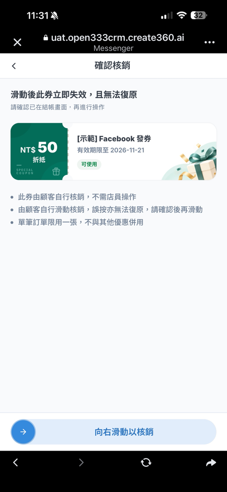
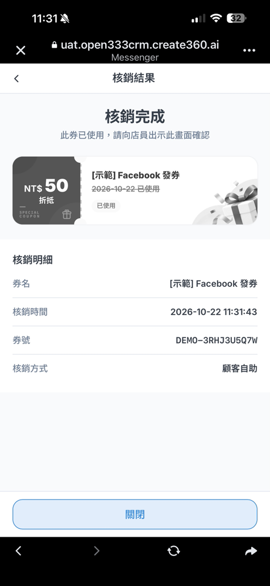

優惠券
建立優惠券、在客服對話中直接發給顧客，顧客在手機上開券、用券，後台隨時看得到誰領了、誰用了。
1 這章能做什麼
優惠券從左側選單「行銷與渠道 → 行銷 → 優惠券」進入。一張券從建立到使用，會經過下面四步：
能做哪些事，取決於帳號的權限：
| 權限 | 可以做的事 | 預設角色 |
|---|---|---|
| 檢視優惠券 | 看優惠券列表、詳情、核銷紀錄與報表 | 管理員、主管、座席 |
| 管理優惠券 | 建立、編輯、發布、暫停、提前結束、刪除草稿 | 管理員 |
| 發送優惠券 | 在收件匣對話中發券 | 管理員、主管、座席 |
| 核銷優惠券 | 在後台以券號核銷 | 管理員 |
2 建立優惠券
在優惠券列表按右上角「建立優惠券」，表單分成七個區塊，右側「設定進度」會即時顯示每一塊是否完成，底部提示還有幾個必填欄位沒填。
| 區塊 | 要設定什麼 |
|---|---|
| 1. 基本資料 | 券名稱（必填，顧客會看到）、使用條款（一行一條）、券面圖（未上傳會用預設券面） |
| 2. 券型與用途 | 券型：元折抵、% 折扣、贈品、兌換，選了之後填對應的金額或品項；用途分類：客服補償或行銷推廣 |
| 3. 效期 | 固定起訖（適合檔期活動）、領取後 N 天（適合入會禮、補償券）、開啟後 N 分鐘（防轉傳、店內即用） |
| 4. 券號 | 一人一碼（可追蹤到個人，需填券號前綴）、共用碼（所有人同一組）、序號包匯入（沿用電商的折扣碼） |
| 5. 發行控制 | 發行總量上限（留空表示不限）、每人領取上限 |
| 6. 核銷方式 | 店員驗證碼、店員掃碼、顧客自己滑動確認，差別見下表 |
| 7. 防濫用與自動化 | 未到生效日不顯示序號；領券自動貼標（領取時替聯絡人貼上指定標籤，可設幾天後自動移除） |
| 核銷方式 | 怎麼用 | 適合 |
|---|---|---|
| 店員驗證碼 | 顧客出示手機，店員在顧客手機上輸入 4–6 位數驗證碼 | 門市、不想另外準備設備 |
| 店員掃碼 | 店員用核銷台掃顧客手機上的 QR Code。核銷台帳號在「設定 → 門市與核銷帳號」建立 | 防護最強、可統計各門市 |
| 顧客自助 | 顧客自己在券頁向右滑動確認，不需要店員 | 無人商店、線上折扣碼、低價值券 |
- 填完必填欄位後，底部會顯示「必填欄位已完成」。
- 按「發布優惠券」，會跳出確認視窗，列出發布後不能改的設定（券型與面額、效期、序號模式、核銷方式），以及這張券的「最壞成本」（發行總量 × 單張面額）。
- 如果有需要特別確認的設定（例如沒有消費門檻），勾選「我已確認以上設定與最壞成本」，再按「確認發布」。
- 發布後會進入券的詳情頁，狀態顯示「進行中」。
3 在對話中發券
座席在收件匣處理客訴或回答問題時，可以直接發一張券給這位顧客。券會以訊息送到顧客所在的渠道（LINE、Facebook、Instagram、網站客服）。
- 在收件匣打開顧客的對話。如果對話上方顯示「Bot 自動處理中」，先按「接管對話」。
- 按輸入框上方工具列的「發券」。
- 面板上方會顯示這位顧客近 90 天的補償次數與金額，以及最近一筆補償，避免重複補償。
- 在「選擇優惠券」挑一張，按「選擇」。這位顧客已達每人上限的券會停用，並寫出他哪天領取、哪天使用。
- 確認發給誰、券名與面額、有效期，按「確認發送」。發送後無法撤回。
- 發送成功後，對話中會出現券卡（寫著由哪位座席發送），右側聯絡人面板的「已發優惠券」也會多一筆。
發給 Facebook／Instagram 的顧客步驟相同，但要注意 24 小時回覆期限：顧客最後一則訊息超過 24 小時，就不能發券，要等顧客再傳訊息進來。對話若還在 Bot 處理中，按「接管對話」時系統會先自動回顧客一句轉接提示，再發券。
| 看到這個訊息 | 原因與處理 |
|---|---|
| 機器人處理中，請先接手對話再發券 | 對話還在 Bot 自動回覆，按「接管對話」後再發 |
| 對話已結束，無法發券 | 對話已結案，需要顧客再傳訊息開啟新對話 |
| 已超過回覆期限，無法發送優惠券 | Facebook、Instagram 規定顧客最後一則訊息超過 24 小時就不能主動發訊息，請等顧客再傳訊息 |
| 此顧客已達每人上限 | 這位顧客這張券已經領滿，請改選其他券 |
| 顧客目前無法接收訊息，券未發出 | 例如顧客封鎖了官方帳號。券沒有發出，不會占用名額 |
| 此對話已不在你的處理範圍 | 你沒有這個渠道的回覆權限，或對話已轉給別人 |
| 系統正在確認券是否已發出，查詢完成前請勿重送 | 網路較慢時會出現。請等結果，或稍後到右側「已發優惠券」查看；再按一次發送也不會重複發出 |
4 顧客怎麼開券、用券
顧客點開券訊息裡的連結，系統會先確認是本人，再把券存入「我的優惠券」。確認方式依渠道不同：
| 渠道 | 顧客怎麼驗證 |
|---|---|
| LINE（已設定 LIFF） | 直接用 LINE 帳號驗證，第一次會出現 LINE 的授權畫面，按「許可」即可，不用輸入 email |
| Facebook、Instagram、網站客服、未設定 LIFF 的 LINE | 第一次要輸入 email，收 6 位數驗證碼後輸入，驗證成功才看得到券。顧客之前已經驗證過身分（例如用 LINE 驗證過，且兩個渠道已歸戶為同一人），點開就直接進入，不會再要求 email |
以下是 LINE 顧客的實際畫面（核銷方式為「顧客自助」）：


以下是 Facebook Messenger 顧客的實際畫面（這位顧客已用 LINE 驗證過，所以沒有出現 email 登記）。返回按鈕會依渠道顯示「回到 Messenger」：




- LINE 自動驗證要先在「設定 → 渠道管理」該 LINE 渠道的「Bot 設定」填好 LIFF App ID 與 LINE Login Channel ID，詳見 15 · 渠道管理。
- LINE 授權畫面顯示的名稱、圖示與說明，來自 LINE Developers 裡 LINE Login channel 的設定，建議改成正式的品牌名稱與 logo。
- 使用 email 驗證時，租戶要在「設定 → 跨渠道綁定」啟用 email 登記。
5 查看核銷紀錄與成效
券詳情頁上方的數字：
| 指標 | 意思 |
|---|---|
| 發送 | 已發出的券數 |
| 開啟連結 | 顧客點開券連結的張數（還沒驗證身分也算），點擊率＝開啟連結 ÷ 發送 |
| 領取 | 顧客完成驗證、券存入「我的優惠券」的張數 |
| 開封 | 顧客打開券詳情的張數 |
| 核銷 | 已使用的張數 |
| 核銷率 | 核銷 ÷ 領取 |
下方「序號明細」列出每一張券的序號、顧客、發放來源（例如「對話發券」與座席名稱）、狀態、領取與核銷時間。顧客來電詢問時，可以在「序號或顧客名稱」直接輸入序號或名字查詢，也能依狀態、領取時間、核銷時間篩選，或按「匯出 CSV」。超過 5,000 筆時匯出會改在背景產生，完成後以站內通知提供下載。
「設定」分頁可以看這張券發布時的所有設定。
其他查看的地方：
- 收件匣右側「已發優惠券」：這位顧客收過哪些券、誰發的、是否已使用，顧客開券或核銷時會即時更新。
- 數據報表 →「優惠券成效」：期間內的發出、已領取、已核銷與核銷率，每日發放與核銷趨勢，以及依核銷數排序的券排行。需要「檢視報表」權限。
6 管理已發布的券
在優惠券列表每一列右邊的「⋯」可以做以下操作（需要「管理優惠券」權限）：
| 操作 | 效果 |
|---|---|
| 查看明細 | 進入券詳情頁 |
| 編輯 | 發布後可以改名稱、條款、券面圖、發行總量（不能低於已發出的張數）等；券型與面額、消費門檻、用途、效期、券號設定、核銷方式與店員驗證碼不能改 |
| 暫停發放／恢復發放 | 暫停期間不能再發券，已發出的券仍可使用 |
| 提前結束 | 立即停止發放，已發出但還沒使用的券會一起作廢，顧客將無法使用 |
| 複製 | 以這張券的設定建立一張新草稿 |
| 刪除 | 只有草稿可以刪除 |